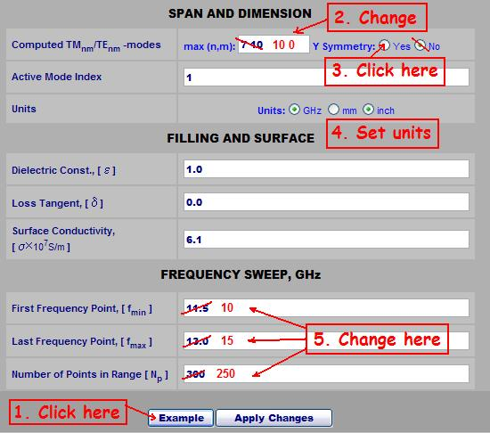

How to Design H-plane Iris Filter Using WR-Connect
Start from Specs
As an example, we present a simplified version of the specification for a Ku-band waveguide filter (let's call it "VSAT receive reject filter").| Parameter | Spec |
| Pass-Band, GHz | 14.0 - 14.5 |
| Insertion Loss, dB | 0.2 |
| Return Loss, dB | 20 |
| Stop-Band, GHz | 10.7 - 12.75 |
| Rejection, dB | 60 |
| I/O Interface | WR75 |
Think About Practical Implementation and Your Support
Although it seams the solution is a high-pass filter, it would be practically preferable to use a band-pass filter instead because the following reasons. First, there is clearly no enough margin from the pass-band to the stop-band but high-pass filters usually provide less roll-off in comparison with band-pass filters of same number of poles. Secondly the practical implementation of a band-pass filter may be simpler relatively to cost and technology issues (we will talk about it later). This (still imaginary) design solution usually much depends on support from the machine shop and supply of materials. Many small businesses making waveguide components use pre-fabricated waveguide tubes and flanges. For example, it is quite affordable to buy tens of meters of WR75 copper pipe with a dozen of cover flanges from Penn Engineering, for example. Then we can cut, drill, screw and solder them using simple tools from the Home Depot. We also may not have a big variety of RF & microwave design tools, such as, for example, Mician "mWave Wizard" or "Super-Duper Filter Trooper" and rely on Marcuvitz's "Waveguide Handbook" [1] or the "Filter Bible" [2]. In contrast, we could count on full support and have everything we need from pencils and washers to CNC EDM machines, PNAs and absolutely full-wave design software. Then we would consider fantastic designs like a superconductive, spuriousless and screwless quarter-wave coupled quadric-mode cavity filter. But let us down to earth and try to make a high Q filter relying on the first type of support, i.e. let us start designing the good old H-plane iris filter just using WR-Connect.Why H-plane Iris Filter
In addition to reasons above, the H-plane iris filter has obvious advantages to other "affordable" waveguide filters such as, for example, post and septum (so-called E-plane) filters;- H-plane iris filters provide more Q in resonators in comparison with post and septum filters. That is because the thin posts and septums introduce more losses than wide irises.
- H-plane iris filters are shorter than the septum filters because irises are thinner.
- H-plane iris filters reject more spurious spectrum than the septum and post filters do so. That is because a symmetric iris rejects the TE20-mode due to the field structure of that spurious mode, but the central posts and septums do not disturb it at all.
- H-plane iris filters are more forgiving to fabrication tolerances and design software inaccuracy. That's because software errors and factory tolerances are relatively smaller in comparison to the transverse dimensions of the iris than in comparison to thickness of bars or septums.
- H-plane iris filters have amazing tuning ability. We could try to tune the receive reject filter to the transmit-reject filters using the tuning screws in cavities and irises.
Open WR-Connect Frameset
Open WR-Connect project by clicking the right link on the top menu. Note that the most computational features of WR-Connect are written in VBScript, which is supported by MS Internet Explorer but it is ignored by some other popular web browsers because of the "browser wars". We do not want to take any side in those wars but we cannot pay tribute to all the browser warriors either.Initial Setup
The Initial Setup page contains all the general information about symmetry, units, modes, environment, materials and sweep. We have to enter those basic parameters in a form (see Fig. 1) and click the "Apply" button. We could also use the "Example" feature as an example of data entry as shown on the figure 1.
Figure 1: An example of initial setup entry Here we have taken advantage of using H-plane uniformity of the structure and counted only 10 first TEN0-modes for computation (we set numbers 10 and 0 separated by blank spaces).
| If more than one number entered in a single data field, all the numbers have to be separated by blank spaces. No commas, tabs, etc. |
Because of the fact that the filter is homogeneous in respect to Y-direction, the Y-symmetry setup does not alter the process of computation. However, setting up the Y-symmetry would be preferable in case of expressing the vertical dimensions of the structure in respect to the central plane. Then we leave the "example" settings for the active mode index and materials as they are and move on to the frequency sweep parameters. By setting these parameters, we would recommend to take into account that we may need run the frequency response multiple times. Therefore it is desirable to choose a reasonable number of frequency points needed for quick run and adequate for the quality of plot (finally we could set more points and wider range anyway). Now, after we are done on this page, we can click the button "Apply Changes" in order to memorize the settings and go to the next step.
| The setting entered here will be saved only by the button Apply Changes. Any other method of navigation ( links, bookmarks, back, forward, refresh, etc.) would rather cancel the entered data and recover the previously applied settings. |
Schematic Editor
After we press the "Apply Changes" button of "Initial Setup" page we normally appear in the "Schematic Editor". Here we actually design the filter by putting irises and cavities.Make Assumption of the Filter Order
First of all, we try to come up with a reasonable number of irises we would need to provide transmission of the pass-band and adequate rejection of the stop-band. In old days the designers followed the tables and charts derived from Chebychev's polynomials in order to determine the right number of poles. There are still many businesses using those kind of charts in order to quote their filter products. In addition, the computerization evolution have brought a variety of software, which precisely synthesizes the optimal polynomial approximation for particular specification ( we would recommend FAZA from Matheonics). Nevertheless, we usually do not use the polynomial approximation charts or software for designing waveguide filters, because of the three following reasons:- The method does not take into account the inconstancy of RF properties of real waveguide elements over the frequency range. For example, in the reality an iris filter has always more rejection on lower roll-off than on the higher roll-off.
- The number of poles is not always important. For example a four-pole filter and a five-pole filter the both meet the spec. However, the four-pole one is shorter. Nevertheless, the five-pole would give us much more margins for the important parameters.
- It might be faster to run WR-Connect couple more times and determine the order of a real iris filter by observing the plots rather than opening additional software and enter the numbers one more time. Following the last rule, we can start with number of poles to be 5. Why five? Because, practically, five is not much and not small value for a number of poles of filter. Suppose five is not enough, then we increase the number of fields for up to seven or eight (depending how much we fail the spec).
Create Filter Template
The picture below shows the sequence of actions how to create a template for the structure file of an iris filter.

Figure 2: How to create a template for waveguide H-plane iris filter.
First, select the "H-plane Iris Band-Pass Filter" and click button named "Create Template". Then IE will send you pop-up message titled "VBScript: Waveguide..." with a strip for data entry (see figure 3).
Enter the number of filter cavities (number of poles), width of waveguide, height of waveguide and thickness of irises. Remember the entry rule that all
numbers have to be separated by blank spaces but not by commas. After the basic dimensions entered, press the OK button. The pop-up window will disappear
and a list of numbers will be created in the text window like it is shown on the picture below.

Figure 3: A template for structure file of iris filter.
| If you have too strict protection of popups, it can block the message with data entry form. If so, you would need to unlock the form in order to enter the filter order and basic dimensions. |
Selection of the Filter Prototype
After the template is created, we go to the prototype selection page by clicking the link named "Prototypes". Then we come to a page with a small entry form (see figure 4).

Figure 4: Sequence of actions to setup the Chebychev prototype function.
Here we enter all the required data, i.e. the resonance order, central frequency, bandwidth and ripple (see details here) and click "Apply"
button.
Filter Synthesis
So we again come to the editor page. Now we push the "Synthesize" button and the Text in the box will change instantly (see figure 5).

Figure 5: The text in window after executing "Synthesize" command.
For more complex structures
IE would send a message complaining about the script (see details here), but it should normally not happen
for a five-pole filter.
Computation of the Frequency Response
So far we have the new numbers in the text window, which express the dimensions of the synthesized filter structure. In order to see how it works, we click the "Analyze" button and wait until the counter at the bottom counts all 251 frequency points from 10.0 to 15 GHz (it would take about 10 seconds).Reviewing Plots
Finally we have got something we could visually review. Let us click the link named "Data Plots" to see the plots of frequency domain characteristics of our filter.

Figure 6: Reflection (dB) and transmission (dB) vs. frequency (GHz) characteristic
Using External Plotting Software
Generally, the quality of plots on WR-Connect is not so good to catch small details of characteristics. But, fortunately, there are many graphic programs on internet to draw graphics very flexible for setting user preferences. If you are not satisfied with the quality of characteristics plotted here, we would recommend to use gnuplot. Gnuplot is just amazing! It is free, it draws everything and it allows users to plot 2D and 3D plots using their own style and preferences. In order to export the frequency response characteristics from here, go to the "Data Import/Export Page" and follow the instructions.Making Adjustments of Bandwidth
It is obvious, we would need to make our filter wider and get more return loss. Respectively, we have to increase the bandwidth (click link to "Prototypes" page) from 0.5 to 1.0 GHz and reduce the attenuation ripple from 0.05 to 0.025. We would also need prefer to see all the ripples, so we could adjust the frequency sweep parameters. Repeating the same sequence of steps, i.e. adjusting the prototype bandwidth, executing synthesis and analysis, and reviewing the plots, we can approach moreorless optimal performance of the filter in two-three adjustments. Here below we present the final configuration, which, according to our opinion, provides the most appropriate combination of simulated parameters in relation to the specification.| Parameter | Value |
| Central Frequency, GHz | 14.225 |
| Bandwidth, GHz | 1.20 |
| Attenuation Ripple, dB | 0.015 |
Those particular settings determine the schematic data shown on figure 7 and the performance shown on figures 8-9 below.

Figure 7: Schematic data corresponding to the optimal synthesis parameters (table 2)

Figure 8: Reflection (dB) and transmission (dB) vs. frequency (GHz) response after adjustments

Figure 9: In-band insertion loss (dB) vs. frequency (GHz) response after adjustments
Iris-Cavity Conversion
This option may seem strange and incomprehensible without further explanation. The point is that WR-Connect computes the diaphragm and the cavity using different mathematical algorithms. A diaphragm, based on its model, is represented by only one waveguide mode inside the window. On the contrary, the cavity algorithm takes into account all the waveguide modes established in the initial setup. Nonetheless, the use of smaller waveguides as the diaphragms is convenient for the synthesis of filters of iris type. In order to simplify conversion from one type of schematic to another type of schematic, WR-Connect has two options. Any sequence of scattering elements (diaphragms, impedance steps and cavities) can be instantly converted to a structure of only cavities and steps if the button "Extract Cavities" located in "Edit Structure" area on left. Conversely, any combination of the diaphragm, and the stages of cavities can be converted to a sequence of only the diaphragm and the steps by clicking the button "Extract Irises" also located there. Although applied to our filter, these two types of representations are showing almost same frequency response, it might be much different for the in-band insertion loss. Therefore, prior to the final adjustments and simulations, the waveguide structure has to be converted into the "cavity type". Applying the iris-cavity conversion method to the schematic data shown on figure 7 we obtain the schematic with all irises (junction 5) converted to the nodes (node 1) and the nodes converted into cavities (junction 2) as shown on figure 10.

Figure 10: Converted schematic data with scattering elements described as cavities.
Final Performance Reviewing
After we converted the irises into cavities by clicking the "Extract Cavities" button as discussed above, we need to run the re-structured model again in order to obtain more accurate performance details.| After conversion from iris type of structure into the cavity type, the "H-plane Iris Filter" template used before for synthesis is not valid anymore and the "Synthesize" method cannot be applied. In order to run synthesis option the structure must be converted back into the iris type of structure. |
We can note that the general frequency response plots on figures 8 and 11 look almost same while the in-band insertion loss has significantly increased (see figures 9 and 12).

Figure 11: Reflection (dB) and transmission (dB) vs. frequency (GHz) response after "iris-to-cavity" conversion

Figure 12: In-band insertion loss (dB) vs. frequency (GHz) response after "iris-to-cavity" conversion
In this case we take the last approximation for the insertion loss as actual because the current "cavity" model is expected to be more accurate.
Design Finalization
If we were designing the filter in order to evaluate potential performance without actually fabricating the real hardware (for example for quoting, proposing or trying ideas), we could consider our design work to be done. In this case we actually have a design solution meeting the specs, so we can withdraw all the parameters we need to prepare a summary of performance of the filter and all the dimensions we would need to draw the formal layouts. But if we intend to build the filter and use it in operation, we would definitely have to consider the following issues.Software Accuracy and Engineering Ethics
Many engineers believe in the "exact software" capable of accurately simulation of the real processes in a device. The logic is that if a thing is designed exactly by a computer meeting all requirements by exact simulation, then it is accurately fabricated using exact technology, so that means the thing must perform in the real world exactly like it is previously simulated. So in case of our the waveguide filter, we design it by HFSS ensuring it passes all requirements by simulation, then we make it by a CNC machine ensuring all dimensions are correct, now we can put it in a box and send to customer by UPS? This might work, but it is probably not a responsible and professional duty to the customer. For example, someone has designed an airplane, using a very precise software. Then the plane is made by using a precise machinery. Would we volunteer to fly on the plane in the first flight? No, of course. What kind of guarantees we would require from the plane designers to feel safe on board? We would definitely need to see tons of margins over those "exactly" simulated parameters including all uncertainties and worst cases. We would definitely require the aviation people to test their airplanes in very extreme conditions and demonstrate tons of margins over. The same responsible way applied to our iris filter would also include evaluation of all uncertainties, designing the filter having margins over those uncertainties, and final testing.Software Inaccuracy
Applying numerical methods to complex problems of electrodynamics, such as the scattering on waveguide discontinuities, have caused many questions for convergence and accuracy of those methods. However, as we know, there is still no simple and valid criteria for accuracy and convergence. Usually, the problem of convergence and accuracy is determined by comparison of the results based on different levels of discretization. For example, we run particular software with different settings for "modes", "nodes" and "tetrahedra" and see the difference in computed values. The idea is if the difference seams reducing while the number of those elements is increasing, then the software is converging. That is actually wrong by well-known definition of convergence given by mathematicians. In order to prove the convergence of a numerical algorithm, it must be observed over infinite number of passes (much behind of computer capability). Therefore, practically any designer has his/her own idea about accuracy of a design software based on his/her experience of using it. That experience is usually based on correlation between the results obtained by the design software with the results measured or obtained by other design software applied to the same design. Processing of multiple data obtained from those different sources, we could have idea about software accuracy, uncertainties and correction factors. Applying this approach to our iris filter would be at least comparing WR_Connect simulation results with the results obtained from software of other type. For comparison, we present results of simulations obtained from different types of software (see Figure 13).

Figure 13: Correlation between simulated data obtained by WR_Connect 01, HFSS and WR_Connect 11
Here the results obtained by WR_Connect 01 (the online version) are compared with results obtained by HFSS 9 and WR_Connect 11 (full-wave Windows console version). The second program has ran 15 passes until showed visual signs of convergence, and the third program used different number of waveguide modes from 10 to 20 and also showed a tendency for convergence. From the plot we may assume that the bandwidth WR_Connect 01 simulation is slightly higher on frequency axis and slightly wider than the bandwidth simulated by the other solvers. We might also assume that the real filter would rather show wider bandwidth and lower center frequency.
Fabrication Tolerances
We also need to have an idea of how accurate our method of production is, i.e. to know the magnitude and style of deviations of the fabricated filter in respect to the nominal dimensions demanded by us. If we expect to fabricate our filter from the prepared waveguide pipes, flanges and plates, we should take into account the following major tolerances:- We could count on +/-0.003'' (the value is specified by the supplier) tolerance on internal dimensions of the WR75 waveguide tube.
- As we cut slots in the waveguide and solder the irises, we may count on +/-0.005'' tolerance of the position of each irises along the filter.
- We assume that the thickness of irises can also deviate +/-0.003''.
- It could also be at least +/-0.005'' precision on the width of each iris.

Figure 14: +/-0.005'' tolerance effect on filter performance
Finishing
If we intend to finish the internal surface of our filter, we should take it into account. Silver covering is commonly used for waveguide applications. We can assume the thickness of silver on the internal surface of our filter to be about 0.0005'' ( QQ-S-365C ). Let assume the silver layer is uniformly put on all internal surface of our filter (practically we have more silver on sharp edges and less on corners). In this case we should reduce the waveguide width, waveguide height, width of each iris and length of each cavity for 0.001'', and we should increase thickness of each iris for the same value. Then we manually correct the schematic text as shown below:
0 1 0.30000 0.37450 0.37400 -0.18700 0.00000
0 1 0.00000 0.00000 0.00000 0.00000 0.00000 0.00000
2 1 0.05100 0.18130 0.37400 -0.18700 0.00000
0 2 0.38919 0.37450 0.37400 -0.18700 0.00000 0.00000
2 1 0.05100 0.12172 0.37400 -0.18700 0.00000
0 2 0.44296 0.37450 0.37400 -0.18700 0.00000 0.00000
2 1 0.05100 0.10873 0.37400 -0.18700 0.00000
0 2 0.45024 0.37450 0.37400 -0.18700 0.00000 0.00000
2 1 0.05100 0.10873 0.37400 -0.18700 0.00000
0 2 0.44296 0.37450 0.37400 -0.18700 0.00000 0.00000
2 1 0.05100 0.12172 0.37400 -0.18700 0.00000
0 2 0.38919 0.37450 0.37400 -0.18700 0.00000 0.00000
2 1 0.05100 0.18130 0.37400 -0.18700 0.00000
0 1 0.00000 0.00000 0.00000 0.00000 0.00000 0.00000
0 1 0.30000 0.37450 0.37400 -0.18700 0.00000
0 1 0.00000 0.00000 0.00000 0.00000 0.00000 0.00000
2 1 0.05100 0.18130 0.37400 -0.18700 0.00000
0 2 0.38919 0.37450 0.37400 -0.18700 0.00000 0.00000
2 1 0.05100 0.12172 0.37400 -0.18700 0.00000
0 2 0.44296 0.37450 0.37400 -0.18700 0.00000 0.00000
2 1 0.05100 0.10873 0.37400 -0.18700 0.00000
0 2 0.45024 0.37450 0.37400 -0.18700 0.00000 0.00000
2 1 0.05100 0.10873 0.37400 -0.18700 0.00000
0 2 0.44296 0.37450 0.37400 -0.18700 0.00000 0.00000
2 1 0.05100 0.12172 0.37400 -0.18700 0.00000
0 2 0.38919 0.37450 0.37400 -0.18700 0.00000 0.00000
2 1 0.05100 0.18130 0.37400 -0.18700 0.00000
0 1 0.00000 0.00000 0.00000 0.00000 0.00000 0.00000
0 1 0.30000 0.37450 0.37400 -0.18700 0.00000
In result, after running simulation, we would have narrower bandwidth shifted up on frequency axis (see figure 15).

Figure 15: Effect of silver 0.0005'' thick layer on bandwidth.
However, the thickness of the finish material (for example silver) could be reasonably about 0.0005'' (depends on specs), which is negligible in comparison to the tolerances evaluated above. We may omit the calculations for now.
Environmental Conditions
If we intend to use our filter outdoor, we have also to take into account the temperature extremes. We can consider a change of temperature from the ambient temperature t0 to the extreme (cold and hot) temperature t, resulting in a proportional change in any dimension by the coefficient 1+CTE*(t-t0) and causing a frequency shift -fc*CTE*(t-t0) . Simple calculation show +/-14.5 MHz bandwidth frequency shift for the filter made from copper (CTE=17ppm/°C) waveguide over the temperature range from -40 °C to +80 °C.Total Effect of Uncertainties
| Uncertainty |
Central Frequency (relative to nominal) |
Bandwidth (relative to nominal) |
| WR-Connect Inaccuracy | 0.994 - 1.000 | 1.000 - 1.048 |
| Fabrication Tolerances | 0.998 - 1.003 | 0.973 - 1.059 |
| Silver Plating | 1.000 - 1.003 | 0.982 - 1.000 |
| Temperature Shift | 0.999 - 1.001 | 0.999 - 1.001 |
| Total Effect | 0.991 - 1.007 | 0.954 - 1.111 |
Tuning Margins
H-plane iris filters are known as "well tuneable" waveguide hardware. The filters having the both types of tuning screws (frequency and coupling screws) usually have more than 20%-30% of capability to change the center frequency and bandwidth from the initial state (when all tuning screws are out). The frequency screws are usually put at the center of each cavity on the wide wall. When the screw is penetrating into the cavity the resonance frequency is reducing. The coupling screws are usually located on the wide wall in the middle of each diaphragm. When the screw is penetrating into the opening of iris, it increasing the coupling through the iris.Corrections
Based on the data from Table 3, we can conclude that if we built a filter with the dimensions showed on Figure 10, that filter could possibly be 0.991 (-0.9%) times lower in frequency and 1.111 (11.1%) times wider than we expected. Then we would not been able to tune it at all. Therefore, we have to project our filter reasonably higher (for example 2%) and wider (for example 15%) in order to be able to bring it to the optimal state (figures 11, 12) by tuning screws. Now we go back to the prototype page and correct the previously set values (see Table 2) for the new values (see Table 4) taking into account margins for uncertainties and tuning.| Parameter | Value |
| Central Frequency, GHz | 14.225*1.02 = 14.51 |
| Bandwidth, GHz | 1.20/1.15 = 1.04 |
| Attenuation Ripple, dB | 0.015 |
As we have already done before, we enter the new values 14.51 instead 14.225 and 1.04 instead 1.20, click "Apply" button and return to the schematic editor page. On the schematic page we convert our filter structure into the "iris type" by clicking "Extract Irises" button (Warning 4) before we click "Synthesize" button. The dimensions we obtain in the text window are the final ones (Figure 15).